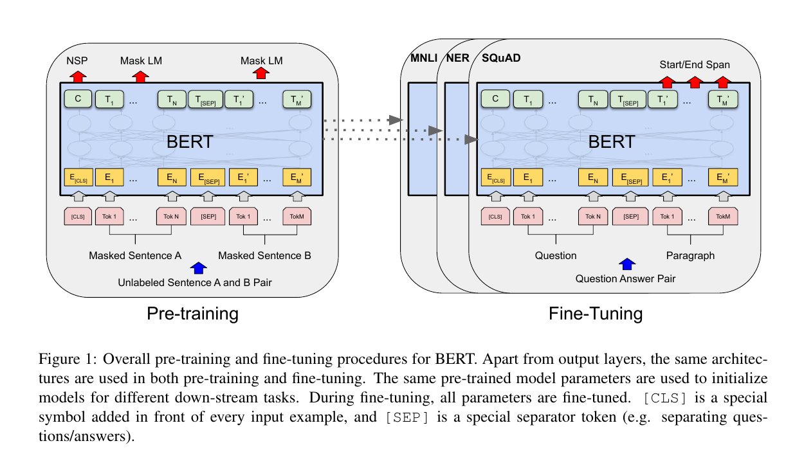

Bidirectional language-model pretraining
Learn a word from both sides.
BERT turns missing words into supervision: hide part of an ordinary sentence, then make every token use its left and right context to recover what disappeared.
Jacob Devlin, Ming-Wei Chang, Kenton Lee, and Kristina Toutanova · NAACL 2019
1. The missing-word idea
A left-to-right language model can use “The cat sat on the …” but not the words after the blank. BERT makes a cloze task: it hides selected tokens and predicts them using both directions at once. Think of proofreading a sentence with one word covered: the words before and after jointly constrain the answer.
Why this matters: the resulting vector for each token is context-sensitive. “bank” in “river bank” can become different from “bank loan” before any task-specific labels arrive.
2. Name the actors before the objective
| Symbol | Meaning | Job |
|---|---|---|
| x | Token sequence | Unlabeled text used in pretraining. |
| x̃ | Corrupted sequence | Some selected tokens are replaced by [MASK], a random token, or left unchanged. |
| hᵢ | Contextual vector at position i | Transformer encoder output used to predict token xᵢ. |
| [CLS] | Leading special token | Sequence-level representation for classification tasks. |
| [SEP] | Separator | Marks the boundary in a paired sequence. |
The paper’s BERTBASE has 12 layers, hidden size 768, 12 attention heads, and 110M parameters; BERTLARGE has 24 layers, hidden size 1024, 16 heads, and 340M parameters.
3. One architecture, two stages

The encoder is the Transformer architecture from the earlier lesson, but unlike a causal decoder it allows each unmasked token to attend to tokens on both sides. The pretraining task supplies the labels that ordinary raw text lacks.
4. Worked trace A: one masked prediction
Sentence: “The penguin [MASK] on ice.” Suppose the vocabulary candidates after the encoder are walked: 0.60, slept: 0.25, quantum: 0.01, and all others: 0.14.
- The model sees the surrounding tokens but not the target token.
- Its softmax gives the true token walked probability 0.60.
- The MLM loss for this selected position is −log(0.60) ≈ 0.51.
- Gradient descent raises support for walked given this two-sided context.
Here M is only the selected masked positions—not every token. The original paper selects 15% of tokens, then uses [MASK] for 80% of selected positions, a random token for 10%, and leaves 10% unchanged.
5. Worked trace B: pretrain, then fine-tune
- Pretraining repeatedly adjusts encoder weights to reconstruct hidden tokens from books and Wikipedia.
- For sentiment classification, add a classifier above [CLS].
- Feed “This film was surprisingly moving.” through the same encoder.
- Fine-tune all encoder weights plus the small classifier using labeled sentiment examples.
The important point: fine-tuning is not merely reading fixed word embeddings. It slightly adapts the whole contextual encoder to the downstream objective.
Predict before revealing: if “river” is removed, can BERT still distinguish the two meanings of “bank”?
Less reliably. Bidirectionality is not magic; the representation can only use cues that remain in the supplied sequence. Removing a decisive context word makes the prediction problem genuinely more ambiguous.
6. Evidence, read at the right scale
The paper reports strong results across GLUE, SQuAD question answering, and named-entity recognition. Those numbers support transfer from the stated pretraining data and model sizes to those benchmark protocols—not a claim that the objectives guarantee factual understanding, fairness, or reliable reasoning.
BERT’s bidirectional encoder and MLM objective are a concrete alternative to using only left-to-right pretraining.
The paper reports state-of-the-art results on eleven NLP tasks at publication time; evaluation conditions and benchmark distributions define that claim.
Next-sentence prediction was part of this paper’s recipe, but later evidence found it unnecessary or replaceable in many settings.
7. Limits and misconception checks
“BERT sees the future, so it can generate text left to right.”
Not directly. Its bidirectional encoder is excellent for representations, but autoregressive generation needs a causal prediction rule or a different decoding method.
“[MASK] appears in normal downstream text.”
No. The paper deliberately reduces the mismatch by not replacing every selected token with [MASK]; it remains an important pretrain–fine-tune mismatch.
“A good benchmark score proves understanding.”
No. It measures behavior on an operationalized benchmark and can reflect dataset artifacts, pretraining overlap, or limited task coverage.
8. Active recall
What creates labels for MLM?
The original token at each selected position is the target; raw text supplies it before corruption.
Why can MLM use both sides of a token?
The BERT encoder’s self-attention is bidirectional during pretraining, unlike a causal mask.
What changes at fine-tuning time?
A task head is added and the pretrained encoder parameters are fine-tuned on labeled examples.
Connect it to your mental map
Transformers: BERT reuses the encoder-side self-attention machinery, but changes the source of supervision from translation pairs to deliberately hidden pieces of ordinary text. SimCLR: both construct a learning target from a transformed input; SimCLR asks which image view matches, while BERT asks which token was concealed. DPO: both later adapt a pretrained language model, but DPO uses preference comparisons whereas BERT uses supervised task labels.
Takeaway
Native intuition: BERT trains a Transformer like a careful reader. By hiding a few words and recovering them from both sides, it turns unlabeled text into a large supply of contextual training signals; fine-tuning then specializes that reading ability for a concrete task.